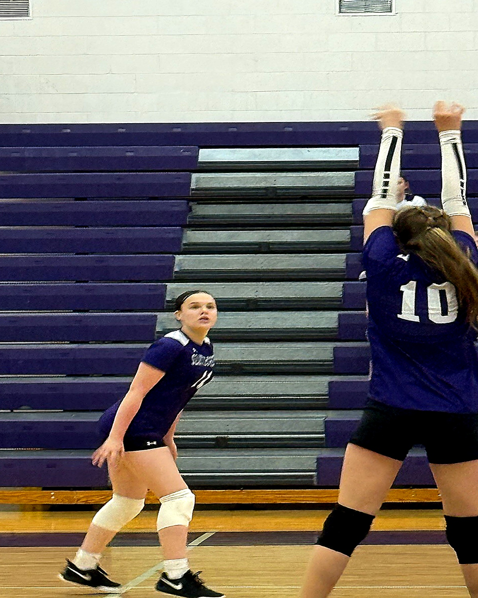
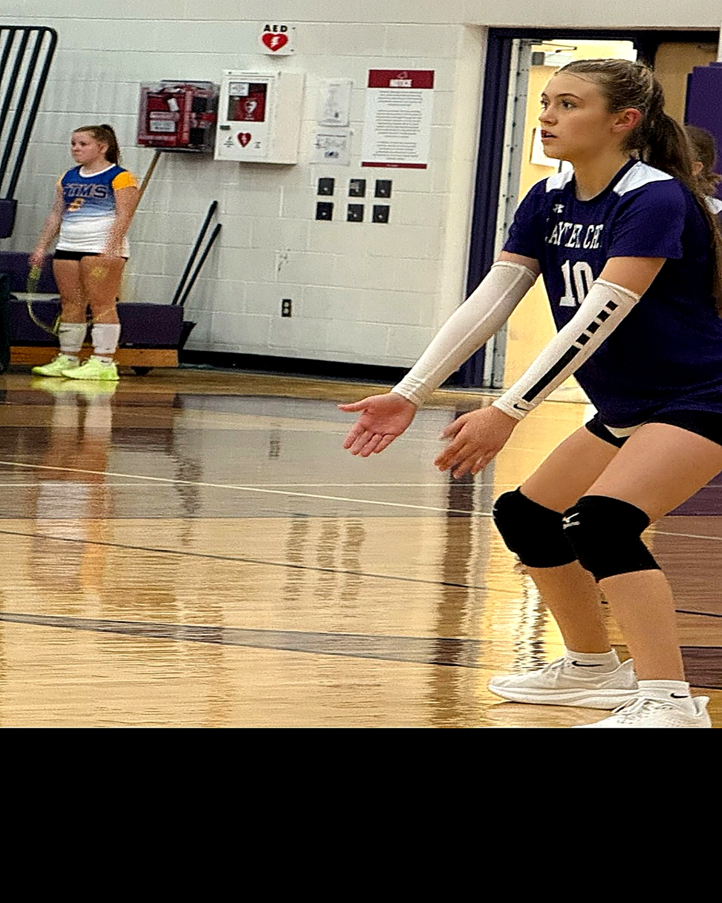
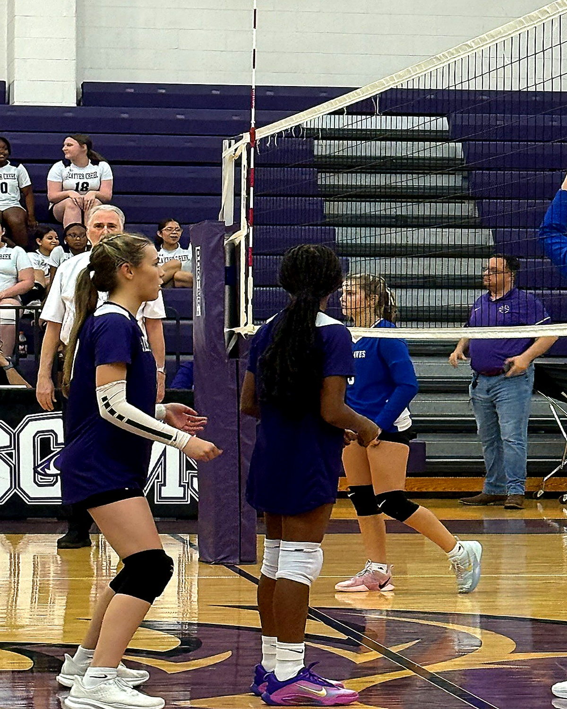
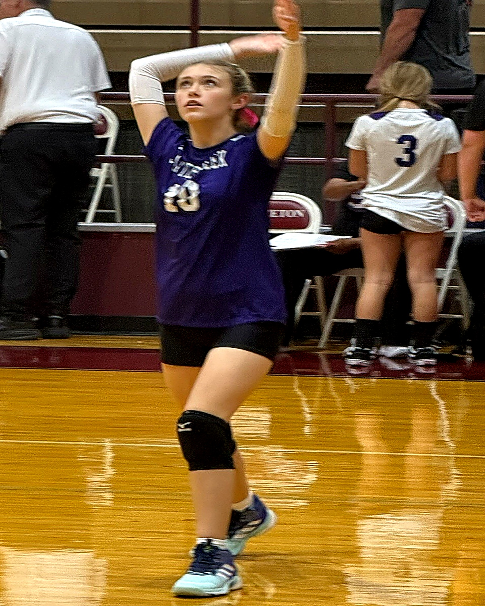

Jordan
Young
Leader on the court. Student in the classroom. Prepared for the next level.
About Jordan
Jordan Young is a Class of 2031 student-athlete from Anna, Texas. She is a setter-first athlete with the versatility to contribute as a right side hitter.
During her 7th-grade season, Jordan served as the starting setter for the Slayter Creek Middle School A Team, helping lead her team to a first-place regular season finish in district and a second-place finish in the end-of-season tournament.
Off the court, Jordan is equally committed to academic excellence. She earned All A Honor Roll recognition, is a member of the National Junior Honor Society, and was named 7th Grade Female Athlete of the Year.

Volleyball Profile
Setter-first. Team-oriented. Focused on development, leadership, and consistent growth.
School Volleyball
Slayter Creek Middle School
- Starting Setter, A Team
- First Place Regular Season in District
- Second Place End-of-Season Tournament
Club Volleyball
SLAM Volleyball
- 14U Black Team
- Primary Position: Setter
- Secondary Position: Right Side Hitter
Player Identity
- Coachable
- Competitive
- Academic Excellence
- Team First

Academic Excellence
Jordan brings the same discipline to the classroom that she brings to the court.
- All A Honor Roll for 7th Grade
- National Junior Honor Society
- Honors Science
- Honors Math
- Honors RLA
- Honors Social Studies
- 7th Grade Female Athlete of the Year
Photo Highlights



Recruiting Contact
For volleyball and recruiting communication, please use the contact page.